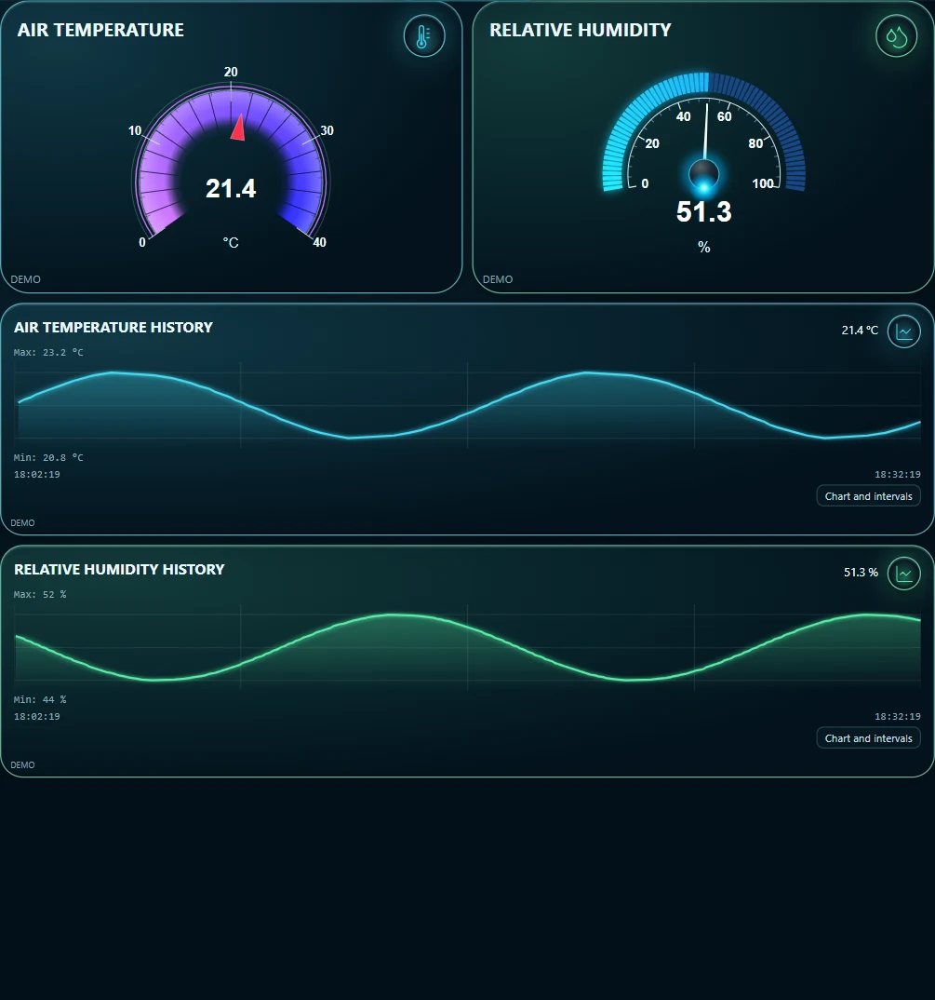
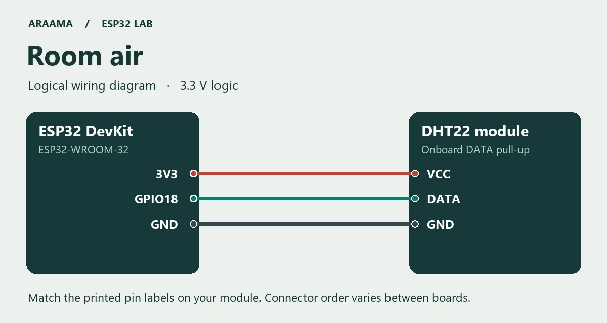

ESP32 / DHT22 / MQTT
Teplota a vlhkost v místnosti na tabletu
Co udělá krátké větrání s teplotou a vlhkostí v místnosti? Na tabletu lze obě veličiny sledovat současně. Stačí jeden DHT22, jedna MQTT zpráva a dva grafy.

Stáhnout programy, simulátor a oba projekty ARAAMA (ZIP)
Co budete potřebovat
Vývojovou desku ESP32-WROOM-32, datový kabel USB, propojovací vodiče, Arduino IDE s balíčkem desek ESP32 od Espressifu, zařízení s Androidem 8 nebo novějším a MQTT broker dostupný oběma zařízením v místní síti.
Třípinový modul DHT22 s osazeným pull-up rezistorem na datové lince. Řiďte se popisky vývodů na svém modulu.
Přiložený projekt je ověřen ve verzi 0.1.10. Pro malý MQTT panel sestavený ručně je k dispozici také odlehčená verze 0.1.5. ARAAMA 0.1.10 · 110 MiB · ARAAMA 0.1.5 · 39 MiB
Zapojení s odpojeným USB

- 3V3 → VCC
- GPIO18 → DATA
- GND → GND
Nahrajte program a zkontrolujte první zprávu
RoomAir/RoomAir.ino
Rozbalte ZIP a v Arduino IDE otevřete soubor .ino ze stejnojmenné složky. Vyberte desku ESP32 Dev Module a její port. Ve správci knihoven nainstalujte PubSubClient a DHT sensor library (Adafruit) včetně nabízených závislostí. Na začátku programu doplňte do prázdných řetězců název Wi-Fi a adresu svého MQTT brokeru. Hesla podle potřeby doplňte u sebe. Ukázka používá port 1883 v důvěryhodné místní síti.
Nahrajte program a otevřete sériový monitor s rychlostí 115200 baudů. Při úspěšném čtení čidla uvidíte každých pět sekund jednu zprávu ve formátu JSON. S prázdným nastavením sítě můžete čidlo vyzkoušet přes USB. Po připojení k brokeru se stejná zpráva odesílá na téma:
lab/room-air/state
{"temperature_c":21.4,"humidity_pct":51.3}DHT22 poskytuje teplotu i vlhkost. Při chybě čtení program zprávu přeskočí, takže při odpojení čidla nevznikne v grafu falešná nula.
Vyzkoušejte si panel bez desky
Na počítači potřebujete Python 3 a příkaz mosquitto_pub dostupný v terminálu. Otevřete terminál v rozbalené složce. Místo BROKER zadejte adresu svého místního brokeru. Vynecháte-li --host BROKER, generátor pouze vypíše JSON. Vzorové hodnoty odesílá jednou za pět sekund. Ukončíte jej pomocí Ctrl+C. Na stejné téma posílejte data buď z generátoru, nebo z desky.
python simulate.py room --host BROKER
Nastavení karet v ARAAMA
RoomAir/panel.json
Pro zobrazení panelu z obrázku otevřete Nastavení → Projekty, exportujte stávající projekt a otevřete odpovídající soubor panel.json z archivu. V nastavení sítě nahraďte broker.example adresou svého brokeru, doplňte přihlašovací údaje a spusťte panel. Oba ukazatele a oba grafy sdílejí dva tagy. Porovnejte hodnotu s poslední MQTT zprávou a počkejte na několik dalších vzorků.
Panel si můžete sestavit také ručně. Během příjmu zpráv otevřete vyhledávání MQTT, zvolte uvedené téma a postupně vyberte obě pole JSON. Každou vazbu uložte jako tag. Nastavte jednotky, přidejte pro každý tag ručičkový ukazatel a zapněte historii. V kartách grafů vyberte tytéž tagy.
$.temperature_c→ °C$.humidity_pct→ %